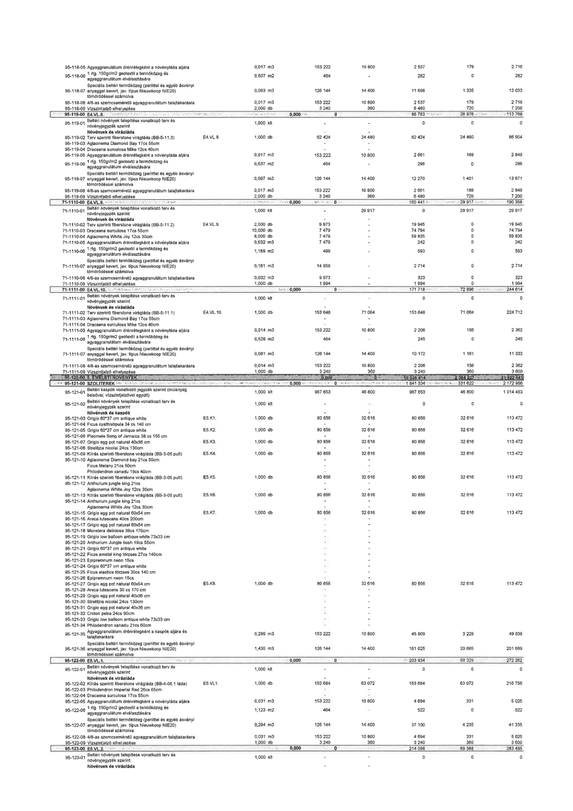

| Tétel | Menny. | Egys. | Anyag e.ár (net HUF) | Díj e.ár (net HUF) | Anyag összesen (net HUF) | Díj összesen (net HUF) | Anyag+Díj összesen (net HUF) |
|---|---|---|---|---|---|---|---|
| 95-118-05 Agyaggranulátum drénrétegként a növényláda aljára | 0,017 | m3 | 153 222 | 10 800 | 2 537 | 179 | 2 716 |
| 95-118-06 1 rtg. 150gr/m2 geotextil a termőközeg és agyaggranulátum elválasztására | 0,607 | m2 | 464 | 0 | 282 | 0 | 282 |
| 95-118-07 Speciális beltéri termőközeg (perlittel és egyéb ásványi anyaggal kevert, jav. típus Nieuwkoop NIE20) tömörödéssel számolva | 0,093 | m3 | 126 144 | 14 400 | 11 698 | 1 335 | 13 033 |
| 95-118-08 4/8-as szemcseméretű agyaggranulátum talajtakarásra | 0,017 | m3 | 153 222 | 10 800 | 2 537 | 179 | 2 716 |
| 95-118-09 Vízszintjelző elhelyezése | 2,000 | db | 3 240 | 360 | 6 480 | 720 | 7 200 |
| 95-119-00 E4.VL.8. | NaN | NaN | 0 | 0 | 86 793 | 26 976 | 113 769 |
| 95-119-01 Beltéri növények telepítése vonatkozó terv és növényjegyzék szerint | 1,000 | kit | 0 | 0 | 0 | 0 | 0 |
| Növények és virágláda | NaN | NaN | 0 | 0 | 0 | 0 | 0 |
| 95-119-02 Terv szerinti fiberstone virágláda (BB-5-11.3) E4.VL.8. | 1,000 | db | 62 424 | 24 480 | 62 424 | 24 480 | 86 904 |
| 95-119-03 Aglaonema Diamond Bay 17cs 55cm | - | - | 0 | 0 | 0 | 0 | 0 |
| 95-119-04 Dracaena surculosa 12cs 40cm | - | - | 0 | 0 | 0 | 0 | 0 |
| 95-119-05 Agyaggranulátum drénrétegként a növényláda aljára | 0,017 | m3 | 153 222 | 10 800 | 2 661 | 188 | 2 849 |
| 95-119-06 1 rtg. 150gr/m2 geotextil a termőközeg és agyaggranulátum elválasztására | 0,637 | m2 | 464 | 0 | 296 | 0 | 296 |
| 95-119-07 Speciális beltéri termőközeg (perlittel és egyéb ásványi anyaggal kevert, jav. típus Nieuwkoop NIE20) tömörödéssel számolva | 0,097 | m3 | 126 144 | 14 400 | 12 270 | 1 401 | 13 671 |
| 95-119-08 4/8-as szemcseméretű agyaggranulátum talajtakarásra | 0,017 | m3 | 153 222 | 10 800 | 2 661 | 188 | 2 849 |
| 95-119-09 Vízszintjelző elhelyezése | 2,000 | db | 3 240 | 360 | 6 480 | 720 | 7 200 |
| 71-1110-00 E4.VL.9. | NaN | NaN | 0 | 0 | 160 441 | 29 917 | 190 358 |
| 71-1110-01 Beltéri növények telepítése vonatkozó terv és növényjegyzék szerint | 1,000 | kit | 0 | 29 917 | 0 | 29 917 | 29 917 |
| Növények és virágláda | NaN | NaN | 0 | 0 | 0 | 0 | 0 |
| 71-1110-02 Terv szerinti fiberstone virágláda (BB-5-11.2) E4.VL.9. | 2,000 | db | 9 973 | 0 | 19 945 | 0 | 19 945 |
| 71-1110-03 Dracaena surculosa 17cs 55cm | 10,000 | db | 7 479 | 0 | 74 794 | 0 | 74 794 |
| 71-1110-04 Aglaonema White Joy 12cs 30cm | 8,000 | db | 7 479 | 0 | 59 835 | 0 | 59 835 |
| 71-1110-05 Agyaggranulátum drénrétegként a növényláda aljára | 0,032 | m3 | 7 479 | 0 | 242 | 0 | 242 |
| 71-1110-06 1 rtg. 150gr/m2 geotextil a termőközeg és agyaggranulátum elválasztására | 1,188 | m2 | 499 | 0 | 593 | 0 | 593 |
| 71-1110-07 Speciális beltéri termőközeg (perlittel és egyéb ásványi anyaggal kevert, jav. típus Nieuwkoop NIE20) tömörödéssel számolva | 0,181 | m3 | 14 959 | 0 | 2 714 | 0 | 2 714 |
| 71-1110-08 4/8-as szemcseméretű agyaggranulátum talajtakarásra | 0,032 | m3 | 9 973 | 0 | 323 | 0 | 323 |
| 71-1110-09 Vízszintjelző elhelyezése | 1,000 | db | 1 994 | 0 | 1 994 | 0 | 1 994 |
| 71-1111-00 E4.VL.10. | NaN | NaN | 0 | 0 | 171 718 | 72 896 | 244 614 |
| 71-1111-01 Beltéri növények telepítése vonatkozó terv és növényjegyzék szerint | 1,000 | kit | 0 | 0 | 0 | 0 | 0 |
| Növények és virágláda | NaN | NaN | 0 | 0 | 0 | 0 | 0 |
| 71-1111-02 Terv szerinti fiberstone virágláda (BB-5-11.1) E4.VL.10. | 1,000 | db | 153 648 | 71 064 | 153 648 | 71 064 | 224 712 |
| 71-1111-03 Aglaonema Diamond Bay 17cs 55cm | - | - | 0 | 0 | 0 | 0 | 0 |
| 71-1111-04 Dracaena surculosa 12cs 40cm | - | - | 0 | 0 | 0 | 0 | 0 |
| 71-1111-05 Agyaggranulátum drénrétegként a növényláda aljára | 0,014 | m3 | 153 222 | 10 800 | 2 206 | 156 | 2 362 |
| 71-1111-06 1 rtg. 150gr/m2 geotextil a termőközeg és agyaggranulátum elválasztására | 0,528 | m2 | 464 | 0 | 245 | 0 | 245 |
| 71-1111-07 Speciális beltéri termőközeg (perlittel és egyéb ásványi anyaggal kevert, jav. típus Nieuwkoop NIE20) tömörödéssel számolva | 0,081 | m3 | 126 144 | 14 400 | 10 172 | 1 161 | 11 333 |
| 71-1111-08 4/8-as szemcseméretű agyaggranulátum talajtakarásra | 0,014 | m3 | 153 222 | 10 800 | 2 206 | 156 | 2 362 |
| 71-1111-09 Vízszintjelző elhelyezése | 1,000 | db | 3 240 | 360 | 3 240 | 360 | 3 600 |
| 95-120-00 5. EMELETI NÖVÉNYEK | NaN | NaN | 0 | 0 | 19 538 414 | 2 384 227 | 21 922 641 |
| 95-121-00 SZOLITEREK | NaN | NaN | 0 | 0 | 1 841 334 | 331 622 | 2 172 956 |
| 95-121-01 Beltéri kaspók vonatkozó jegyzék szerint (műanyag belsővel, vízszintjelzővel együtt) | 1,000 | kit | 967 653 | 46 800 | 967 653 | 46 800 | 1 014 453 |
| 95-121-02 Beltéri növények telepítése vonatkozó terv és növényjegyzék szerint | 1,000 | kit | 0 | 0 | 0 | 0 | 0 |
| Növények és kaspók | NaN | NaN | 0 | 0 | 0 | 0 | 0 |
| 95-121-03 Grigio 60*37 cm antique white E5.K1. | 1,000 | db | 80 856 | 32 616 | 80 856 | 32 616 | 113 472 |
| 95-121-04 Ficus cyathistipula 34 cs 140 cm | 1,000 | db | 80 856 | 32 616 | 80 856 | 32 616 | 113 472 |
| 95-121-05 Grigio 60*37 cm antique white E5.K2. | 1,000 | db | 80 856 | 32 616 | 80 856 | 32 616 | 113 472 |
| 95-121-06 Pleomele Song of Jamaica 38 cs 150 cm | 1,000 | db | 80 856 | 32 616 | 80 856 | 32 616 | 113 472 |
| 95-121-07 Grigio egg pot natural 40x36 cm E5.K3. | 1,000 | db | 80 856 | 32 616 | 80 856 | 32 616 | 113 472 |
| 95-121-08 Strelitzia nicolai 24cs 130cm | 1,000 | db | 80 856 | 32 616 | 80 856 | 32 616 | 113 472 |
| 95-121-09 Kiírás szerinti fiberstone virágláda (BB-3-05 pult) E5.K4. | 1,000 | db | 80 856 | 32 616 | 80 856 | 32 616 | 113 472 |
| 95-121-10 Aglaonema Diamond bay 21cs 50cm | - | - | 0 | 0 | 0 | 0 | 0 |
| Ficus lyrata | - | - | 0 | 0 | 0 | 0 | 0 |
| Philodendron xanadu 19cs 40cm | - | - | 0 | 0 | 0 | 0 | 0 |
| 95-121-11 Kiírás szerinti fiberstone virágláda (BB-3-05 pult) E5.K5. | 1,000 | db | 80 856 | 32 616 | 80 856 | 32 616 | 113 472 |
| 95-121-12 Anthurium jungle king 21cs | - | - | 0 | 0 | 0 | 0 | 0 |
| Aglaonema White Joy 12cs 30cm | - | - | 0 | 0 | 0 | 0 | 0 |
| 95-121-13 Kiírás szerinti fiberstone virágláda (BB-3-05 pult) E5.K6. | 1,000 | db | 80 856 | 32 616 | 80 856 | 32 616 | 113 472 |
| 95-121-14 Anthurium jungle king 21cs | - | - | 0 | 0 | 0 | 0 | 0 |
| Aglaonema White Joy 12cs 30cm | - | - | 0 | 0 | 0 | 0 | 0 |
| 95-121-15 Kiírás szerinti fiberstone virágláda (BB-3-05 pult) E5.K7. | 1,000 | db | 80 856 | 32 616 | 80 856 | 32 616 | 113 472 |
| 95-121-16 Areca lutescens 40cs 200cm | - | - | 0 | 0 | 0 | 0 | 0 |
| 95-121-17 Grigio egg pot natural 60x54 cm | - | - | 0 | 0 | 0 | 0 | 0 |
| 95-121-18 Monstera deliciosa 38cs 170cm | - | - | 0 | 0 | 0 | 0 | 0 |
| 95-121-19 Grigio low balloon antique white 73x33 cm | - | - | 0 | 0 | 0 | 0 | 0 |
| 95-121-20 Anthurium Jungle bush 19cs 55cm | - | - | 0 | 0 | 0 | 0 | 0 |
| 95-121-21 Grigio 60*37 cm antique white | - | - | 0 | 0 | 0 | 0 | 0 |
| 95-121-22 Dracaena fragrans Lemon Lime 27cs 140cm | - | - | 0 | 0 | 0 | 0 | 0 |
| 95-121-23 Epipremnum neon 15cs | - | - | 0 | 0 | 0 | 0 | 0 |
| 95-121-24 Grigio 60*37 cm antique white | - | - | 0 | 0 | 0 | 0 | 0 |
| 95-121-25 Ficus elastica törzses 30cs 140 cm | - | - | 0 | 0 | 0 | 0 | 0 |
| 95-121-26 Epipremnum neon 15cs | - | - | 0 | 0 | 0 | 0 | 0 |
| 95-121-27 Grigio egg pot natural 60x54 cm E5.K8. | 1,000 | db | 80 856 | 32 616 | 80 856 | 32 616 | 113 472 |
| 95-121-28 Areca lutescens 30 cs 170 cm | - | - | 0 | 0 | 0 | 0 | 0 |
| 95-121-29 Grigio egg pot natural 40x36 cm | - | - | 0 | 0 | 0 | 0 | 0 |
| 95-121-30 Strelitzia nicolai 24cs 130cm | - | - | 0 | 0 | 0 | 0 | 0 |
| 95-121-31 Grigio egg pot natural 40x36 cm | - | - | 0 | 0 | 0 | 0 | 0 |
| 95-121-32 Croton petra 24cs 90cm | - | - | 0 | 0 | 0 | 0 | 0 |
| 95-121-33 Grigio low balloon antique white 73x33 cm | - | - | 0 | 0 | 0 | 0 | 0 |
| 95-121-34 Philodendron xanadu 21cs 60cm | - | - | 0 | 0 | 0 | 0 | 0 |
| 95-121-35 Agyaggranulátum drénrétegként a kaspók aljára és talajtakarásra | 0,299 | m3 | 153 222 | 10 800 | 45 809 | 3 229 | 49 038 |
| 95-121-36 Speciális beltéri termőközeg (perlittel és egyéb ásványi anyaggal kevert, jav. típus Nieuwkoop NIE20) tömörödéssel számolva | 1,435 | m3 | 126 144 | 14 400 | 181 025 | 20 665 | 201 689 |
| 95-122-00 E5.VL.1. | NaN | NaN | 0 | 0 | 203 934 | 68 329 | 272 262 |
| 95-122-01 Beltéri növények telepítése vonatkozó terv és növényjegyzék szerint | 1,000 | kit | 0 | 0 | 0 | 0 | 0 |
| Növények és virágláda | NaN | NaN | 0 | 0 | 0 | 0 | 0 |
| 95-122-02 Kiírás szerinti fiberstone virágláda (BB-4-06.1 láda) E5.VL.1. | 1,000 | db | 153 684 | 63 072 | 153 684 | 63 072 | 216 756 |
| 95-122-03 Philodendron Imperial Red 28cs 65cm | - | - | 0 | 0 | 0 | 0 | 0 |
| 95-122-04 Dracaena surculosa 17cs 55cm | - | - | 0 | 0 | 0 | 0 | 0 |
| 95-122-05 Agyaggranulátum drénrétegként a növényláda aljára | 0,031 | m3 | 153 222 | 10 800 | 4 694 | 331 | 5 025 |
| 95-122-06 1 rtg. 150gr/m2 geotextil a termőközeg és agyaggranulátum elválasztására | 1,123 | m2 | 464 | 0 | 522 | 0 | 522 |
| 95-122-07 Speciális beltéri termőközeg (perlittel és egyéb ásványi anyaggal kevert, jav. típus Nieuwkoop NIE20) tömörödéssel számolva | 0,294 | m3 | 126 144 | 14 400 | 37 100 | 4 235 | 41 335 |
| 95-122-08 4/8-as szemcseméretű agyaggranulátum talajtakarásra | 0,031 | m3 | 153 222 | 10 800 | 4 694 | 331 | 5 025 |
| 95-122-09 Vízszintjelző elhelyezése | 1,000 | db | 3 240 | 360 | 3 240 | 360 | 3 600 |
| 95-123-00 E5.VL.2. | NaN | NaN | 0 | 0 | 214 098 | 69 388 | 283 485 |
| 95-123-01 Beltéri növények telepítése vonatkozó terv és növényjegyzék szerint | 1,000 | kit | 0 | 0 | 0 | 0 | 0 |
